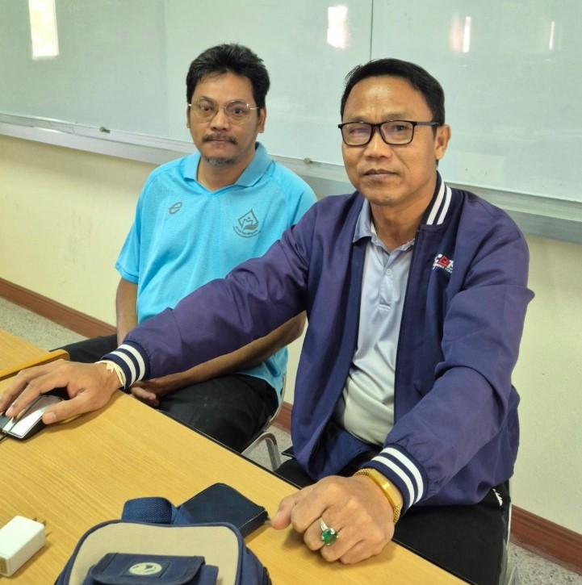

|

"ทำวันนี้ให้ดีที่สุด พรุ่งนี้จะดีกว่าเดิม" (เน้นการพัฒนาตนเองและผลักดันให้ทำงานอย่างเต็มที่ในแต่ละวัน) "ความสำเร็จมาจากความพยายาม และความพยายามมาจากหัวใจที่ไม่ยอมแพ้" (ย้ำให้มุ่งมั่นแม้ในสถานการณ์ที่ยากลำบาก) "งานทุกชิ้นคือโอกาสในการแสดงศักยภาพของตัวเอง" (กระตุ้นให้เห็นคุณค่าในทุกสิ่งที่ทำ ไม่ว่างานจะเล็กหรือใหญ่) นิทานเตือนใจเกี่ยวกับการทำงาน นิทานเรื่อง: "ช่างตัดไม้กับขวานที่หายไป" มีช่างตัดไม้คนหนึ่งชื่อว่า "เอก" เขาเป็นช่างตัดไม้ที่ขยันขันแข็ง แต่วันหนึ่ง ขณะกำลังตัดต้นไม้อยู่ริมแม่น้ำ ขวานของเขาหลุดมือและตกลงไปในน้ำลึก เอกหมดหวังเพราะขวานนั้นเป็นเครื่องมือสำคัญในการทำงาน ทันใดนั้น เทพเจ้าผู้ดูแลแม่น้ำปรากฏตัวขึ้นและถามเอกว่า: “เจ้าสูญเสียอะไรไป?” เอกตอบว่า “ข้าสูญเสียขวานของข้าไป มันจำเป็นต่อการทำงานของข้า” เทพเจ้านำขวานทองคำขึ้นมาจากแม่น้ำและถามว่า: “นี่คือขวานของเจ้าหรือไม่?” เอกตอบอย่างซื่อสัตย์ว่า: “ไม่ใช่ ขวานของข้าทำจากเหล็กธรรมดา” เทพเจ้าจึงดำน้ำอีกครั้ง และนำขวานเงินขึ้นมา เอกยังคงตอบปฏิเสธว่าไม่ใช่ขวานของเขา จนเมื่อเทพเจ้าดึงขวานเหล็กขึ้นมา เอกจึงยอมรับว่าเป็นขวานของเขา เทพเจ้าประทับใจในความซื่อสัตย์ของเอก จึงมอบขวานทั้งสามเล่มให้เป็นรางวัล ข้อคิดจากนิทาน ความซื่อสัตย์เป็นคุณสมบัติที่สำคัญในการทำงาน แม้ว่าการเลือกพูดความจริงอาจดูเหมือนไม่ได้ผลประโยชน์ในระยะสั้น แต่จะนำมาซึ่งผลลัพธ์ที่ดีในระยะยาว อย่าสูญเสียความหวังแม้ในสถานการณ์ที่ลำบาก บางครั้งปัญหาที่ดูเหมือนจะไม่มีทางแก้ไข อาจนำมาซึ่งโอกาสใหม่ ๆ ผลของความดีจะกลับมาสู่เราเสมอ การทำงานด้วยความจริงใจและตั้งใจ จะนำมาซึ่งผลลัพธ์ที่คุ้มค่าในที่สุด |